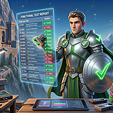
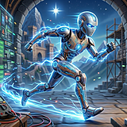

Mission Control
LIVE
HEALTHY signal · 5s refresh
PHASE
2/6
Build
ACTIVE
1
of 9 agents
QUEUE
6
stories remaining
REVIEWS
0
awaiting verdict
BLOCKED
0
all clear
TESTS
2341/0
passing
COVERAGE
93.67%
statements
AI SPEND
—
today
01
Blueprint
✓00:30:00
02
Architect
✓00:30:00
03
Build
✓
04
Integration
✓
05
Test
✓
06
Polish
✓
Pixel
Frontend Developer
US-0171US-0171 dashboard visual hierarchy

Conductor · Last Dispatch
dispatched → Pixel · US-0171 · Build phase
Compass
Product Owner
IDLE
Keystone
Architect
IDLE
Lens
Code Reviewer
IDLE
Palette
UI Designer
IDLE
Forge
Backend Developer
IDLE

Sentinel
Functional Tester
IDLE

Circuit
Automation Tester
IDLE
Event Log
LIVEActivity Log
[20:15:03][Pixel]started US-0171 feature/US-0171-dashboard-ux
[20:15:02][Conductor]dispatched → Pixel · US-0171 · Build phase